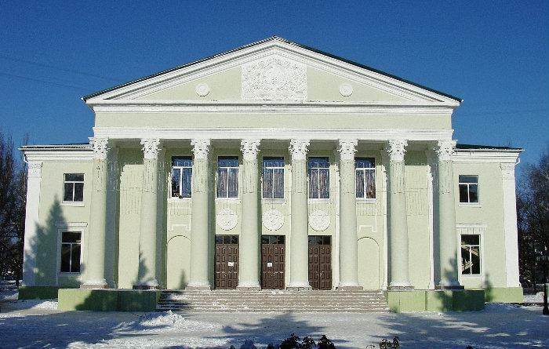
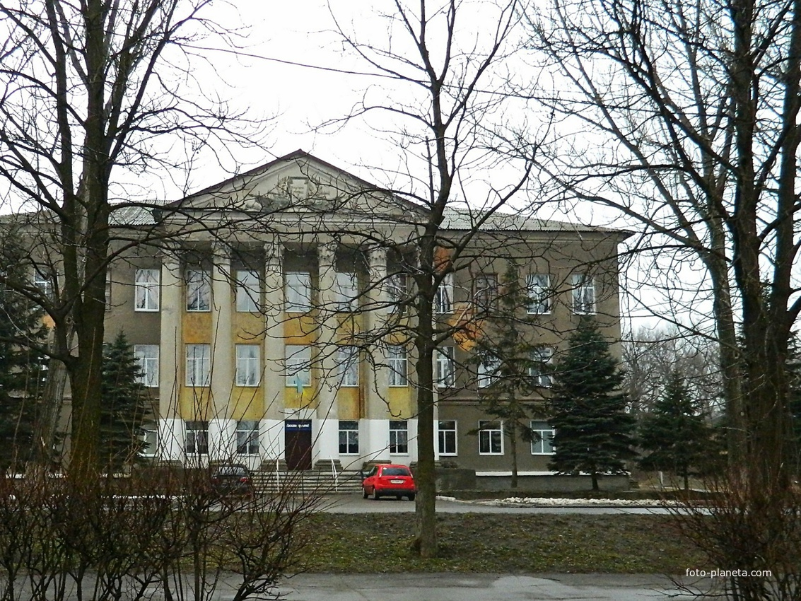
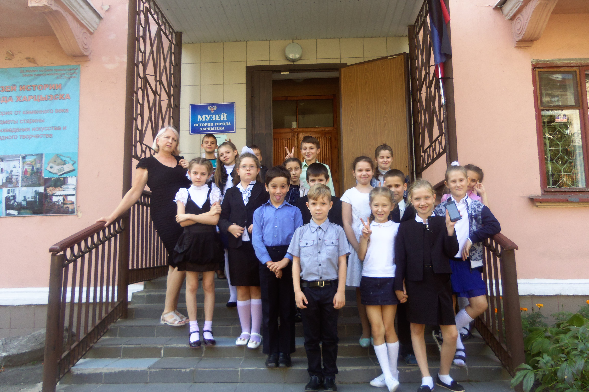
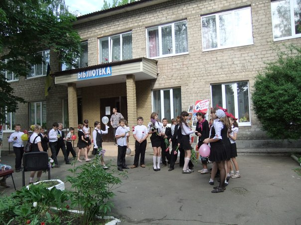
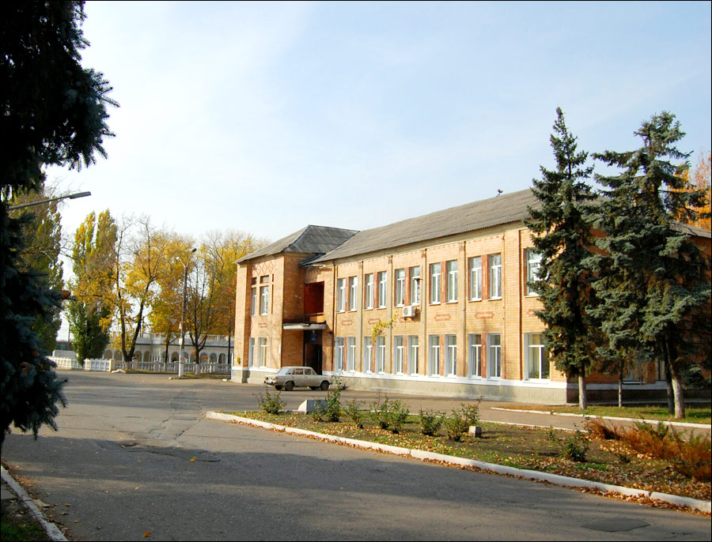
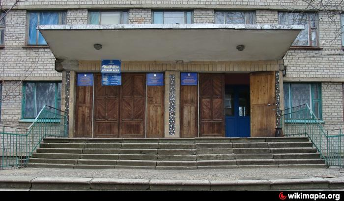

|

Харцызский городской дворец культурыАдрес: г. Харцызск, пл. Ленина, 1 ПодробнееХарцызский городской Дворец культуры является памятником архитектуры города и базовым центром культурной и духовного жизни города. Дворец культуры был построен в 1959 году, общая площадь помещений – 4420,86 кв. г. По оплате труда относится к заведениям культуры первой категории. Являясь центром творчества и эстетичного развития детей и молодежи, а также население Харцызска всех возрастных и социальных категорий, Дворец культуры использует в работе все формы культурно – зрелищных мероприятий, оказует методическую и организационную помощь предприятиям и учреждениям города. Во Дворце культуры работают 17 коллективов художественной самодеятельности и 4 любительских объединения и клубов по интересам. 5 коллективов художественной самодеятельности имеют звание «Народный» и «Образцовый». |

ЦДЮТ г. ХарцызскаАдрес: г. Харцызск, ул. Адамца, 115 ПодробнееКомпания Центр детского и юношеского творчества находится в Харцызске и расположена по адресу улица Адамца, 115. К сферам деятельности данной организации можно отнести следующие виды: Дополнительное образование. Чтобы связаться с сотрудниками компании, вы можете позвонить по телефону +380 6257 43489 и уточнить у них любую интересующую вас информацию. Режим и время работы организации: пн-чт 8:00-17:00, пт 8:00-16:00. Так же в Харцызске в сфере Дополнительное образование работают следующие компании: Харцызская школа искусств по адресу Вокзальная улица, 57 |

Музей истории города ХарцызскаАдрес: г. Харцызск, ул. Октябрьская, 37 ПодробнееМузей истории города Харцызска был создан в 1966г. Музей является научно – исследовательским и культурно – образовательным учреждением, предназначенным для изучения, сохранения и использования памятников истории, материальной и духовной культуры, приобщения граждан к достоянию национального и мирового историко – культурного наследия. Главной задачей музея является обеспечение сохранности экспонатов в экспозиции и в фондохранилище, охрана культурного наследия. Также в музее проводятся экскурсии, видеолектории, создаются экспозиции (выставки). Проводится подготовка научных работ, участие в научных конференциях. Работники музея занимаются комплектацией фондов музейных коллекций по музейным программам. В экспозиционных залах представлены: «Наш край с древнейших времен до начала XX века», «Харцызск в годы революций и войн. Социально-экономическое и культурное развитие города (XX век)», «Мемориальный интерьер семьи Шалимовых (50-е годы XX века)», «Харцызск современный (1960-2010 годы)», «Боевые действия на территории ДНР и участие в них харцызян (2014-2016 гг.)». |
|

Центральная городская библиотека в г. ХарцызскАдрес: г. Харцызск, пер. Николенко, 1 ПодробнееЦентральная городская библиотека – главная библиотека города является методическим центром для всех библиотек города. Здесь вы можете найти информацию по всем вопросам и темам, расширить свой кругозор и получить дополнительные знания, найти работу, выбрать учебное заведение, сориентироваться в профессиях и сделать свой правильный выбор, ознакомиться с новостями в периодических изданиях. Опытные библиотекари помогут вам в поиске ответов на самые сложные вопросы. Только у нас вы сможете заказать необходимые вам материалы в библиотеках других городов, воспользовавшись услугами Межбиблиотечного абонемента (МБА). |

Харцызская Школа ИскусствАдрес: г. Харцызск, ул. Вокзальная, 57 ПодробнееКоммунальное учреждение дошкольного образования «Харцызская школа искусств» была создана в 1956 году. В Харцызской школе искусств работают: фортепианный отдел, оркестровый отдел, отдел народных инструментов, музыкально теоретический и вокально-хоровой отдел, художественное отделение. |

Городской архивАдрес: г. Харцызск, ул. Постышева, 228 ПодробнееПеречень услуг, оказываемых архивным отделом администрации г. Харцызска юридическим и физическим лицам:
|